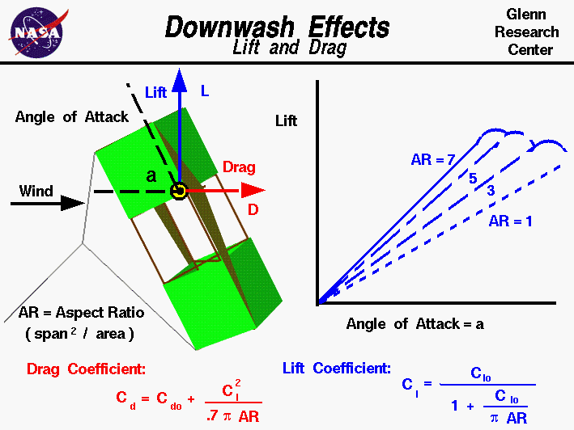

|

An excellent way for students to gain a feel for
aerodynamic forces
is to fly a
kite.
Kites
fly
because of forces acting on the
parts
of the kite.
Though kites come in many
shapes and sizes, the
forces which act on the kite are
the same for all kites.
You can compare these forces to the
forces that act on an airliner in
flight and you will find that, with the exception of thrust,
they are exactly the same.
Since the forces on a kite are the same as the forces on an airplane,
we can use the mathematical equations developed to predict airplane
performance to predict the aerodynamic performance of a kite.
The
aerodynamic force
on a kite is a
vector quantity
having both a magnitude and a direction.
The aerodynamic force is
resolved
into the
lift
which acts perpendicular to the wind direction and the
drag
which acts along the wind direction.
There are several factors that affect the magnitude and the direction
of the aerodynamic force.
On this page we show the effects of downwash
on the lift and drag.
The graphic shows a side view of the
flying kite with the aerodynamic lift
shown by the blue vector, and the drag by the red vector.
The wind is blowing parallel to the ground;
The kite is inclined to the wind at an angle of attack, a, which
affects
the amount of lift and drag generated by the kite.
Other factors affecting the lift and drag include the
wind velocity,
the
air density.
For any object, the lift and drag depend on the
lift coefficient, Cl,
and the
drag coefficient, Cd
of the object.
These coefficients are usually determined experimentally for aircraft,
but the aerodynamic surfaces for most kites are simple, thin, flat
plates. So we can use some experimental values of the lift and drag
coefficients for flat plates to get a first order idea of our kite performance.
For a thin flat plate, the effects of angle of attack are easily determined.
The lift coefficient Clo is equal to 2.0 times pi (3.14159)
times the angle a expressed in radians (180 degrees equals pi radians):
Clo = 2 * pi * a
The drag coefficient Cdo is equal to 1.28 times
times the trigonometric sine,
sin,
of the angle a:
Cdo = 1.28 * sin(a)
We use Clo for the lift coefficient and Cdo for the drag coefficient
because there is another aerodynamic effect present
on most kites. If we think of a
kite as an aircraft wing, and use the
terminology associated with aircraft wings,
most kites have a low wing span (length from side to side)
relative to the surface area.
Most kites therefore have a low aspect ratio AR
which is defined to be span s squared divided by the area A.
AR = s^2 / A
Near the tips of a wing the flow spills from the under side to the top side
because of the difference in pressure. This creates a
downwash
which changes the effective angle of attack of the flow over
a portion of the wing. For low aspect ratio wings, the portion of the wing
affected by the downwash is greater than for high aspect ratio wings.
Since most kites have a low aspect ratio AR, we have to include the effect of
the
downwash on the lift and drag coefficient.
The equation for the lift coefficient is:
Cl = Clo / (1 + Clo / (pi * AR) )
The effect of downwash on lift coefficient is shown on the plot. Low aspect
ratio wings (AR ~ 1) have significantly less lift than higher aspect ratio
wings (AR ~7).
The effect of downwash on the drag coefficient
is called the "drag due to lift" or the induced drag of the
wing.
The equation for induced drag is:
Cd = Cdo + Cl^2 / (.7 * pi * AR) )
where the .7 is an efficiency factor for rectangular wing shapes.
With these equations you can make a first prediction of the lift and drag of your
kite. You can use the
KiteModeler program to further study how kites work
and to design your own kites.
Activities:
Guided Tours
Navigation ..


- Beginner's Guide Home Page
|